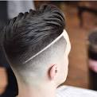
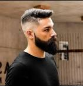
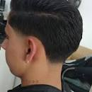

Sobre os serviços
Cabelo
A barbearia Navalha e Arte oferece serviços de cuidado e estilização de cabelo que vão além de um simples corte. Os barbeiros especializados nesta barbearia são mestres na arte de transformar seus cabelos, proporcionando cortes que são verdadeiras obras-primas. Eles entendem a importância do cabelo na expressão da sua personalidade e estilo, e estão equipados para criar cortes que acentuam suas características únicas. Seja um corte clássico, moderno ou ousado, você pode esperar que seu cabelo seja tratado com habilidade e cuidado, resultando em um visual impecável.
Barba
Na Navalha e Arte, a barba é mais do que apenas um aspecto da estética masculina; é uma forma de expressão. Os barbeiros desta barbearia são especialistas em aparar, modelar e cuidar da barba, dando-lhe um aspecto limpo e bem definido. Eles oferecem serviços que vão desde cortes de barba tradicionais até estilos mais contemporâneos, permitindo que você alcance a aparência que melhor combina com sua personalidade e preferências. Além disso, a Navalha e Arte também oferece tratamentos de barba, como a aplicação de produtos de qualidade para manter sua barba saudável e com um aroma agradável.
Sobrancelha
As sobrancelhas desempenham um papel fundamental na harmonia facial, e a Navalha e Arte compreende a importância de cuidar delas. Os especialistas em sobrancelha desta barbearia oferecem serviços de design e modelagem de sobrancelhas para homens que desejam realçar sua aparência facial. Eles trabalham de forma precisa e cuidadosa para criar sobrancelhas que se encaixem perfeitamente na estrutura do seu rosto, acentuando seus olhos e expressão. O resultado são sobrancelhas impecáveis que complementam seu visual de forma natural.
Pezinho
O "pezinho" é uma técnica de acabamento para homens que desejam uma linha de cabelo e barba extremamente definida. A Navalha e Arte é especializada em proporcionar um "pezinho" perfeito, criando linhas nítidas e bem delineadas que dão um toque de sofisticação ao seu visual. Os barbeiros desta barbearia usam lâminas afiadas e técnicas precisas para criar um acabamento limpo e simétrico, proporcionando um contraste impressionante entre o cabelo e a pele.